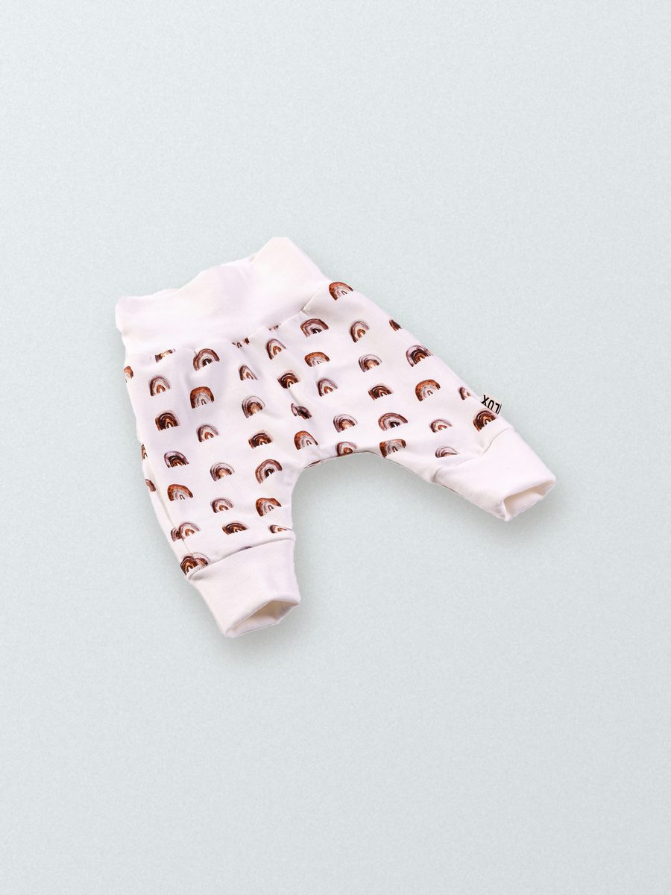

Prematuurkleding
“Mijn passie is maatwerk in (prematuur)babykleding: net iets anders en persoonlijks.”
Carien Geurts —
001 — Maatwerk

002 — Prijsrichtlijn
Prijsrichtlijn: [prijs]
003 — Zo werkt het
-
Samen
kiezenSamen kies je wat het wordt, en in welke stof, kleur en maat.
-
Persoonlijk
makenAltijd met naam of eigen detail.
-
Met zorg
gemaaktCarien maakt elk stuk met de hand in haar atelier in Ospel.
004 — Contact
Zin om samen
iets moois
te maken?